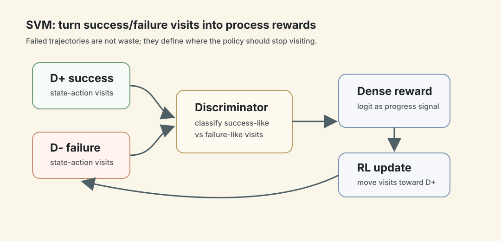
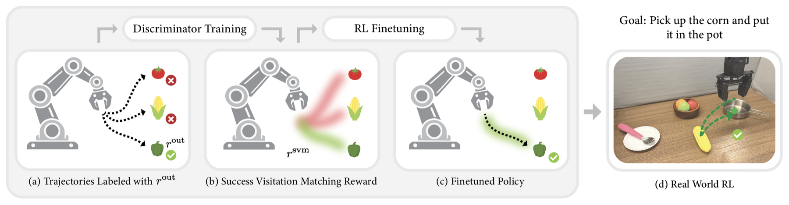
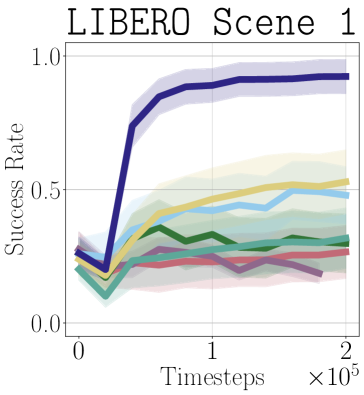
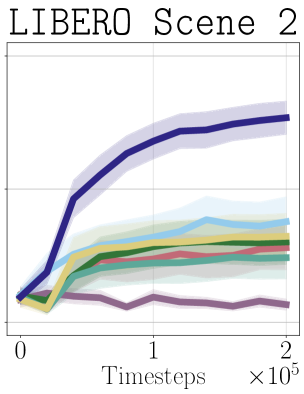
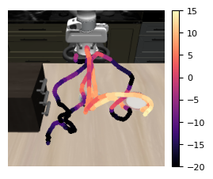

SVM Process Rewards：用成功/失败轨迹把 0/1 奖励变成过程奖励
- Paper: Learning Process Rewards via Success Visitation Matching for Efficient RL
- Project: success-visitation-matching.github.io
- Version: arXiv v1, 2026-06-22
- 类型: process reward / reward shaping / robotic RL finetuning
- 关键词: Success Visitation Matching, SVM reward, sparse outcome reward, discriminator, DSRL, Residual RL, LIBERO, RoboCasa, WidowX
读法：给人和 agent 的路标
这篇虽然主要实验在机器人，但和 LLM 的 RLVR 很相关：如果只有最终成功/失败的 0/1 reward，能不能自动构造 dense process reward？
给 agent 之后检索，关键词是：success visitation matching、SVM process reward、successful vs unsuccessful episodes、logit discriminator reward、DSRL、Residual RL、WidowX real-world RL、deterministic MDP theorem。
一句话判断
SVM process rewards 的核心思路非常简单：把以前的轨迹按 sparse outcome reward 分成成功和失败两堆，训练一个 discriminator 判断某个 state-action 更像成功轨迹还是失败轨迹，再把 discriminator logit 当作 dense reward；这样 policy 会被奖励去访问“过去通向成功”的状态动作，同时避开失败访问模式。
图表优先读法
| 先看 | 图/表 | 读完应该抓住什么 |
|---|---|---|
| 1 | overview 图 | SVM 把成功/失败轨迹分布差异变成 process reward |
| 2 | heatmap | reward 不是只看最终答案，而是在中间 state-action 上塑形 |
| 3 | residual RL results | SVM 是否能在已有 sparse reward 上继续提供增益 |
| 4 | 理论保证 | discriminator logit 和 visitation matching 之间是什么关系 |
| 5 | 负例小节 | 失败轨迹不是废料，它定义了“不要访问”的区域 |

这张自制图把 SVM process reward 的核心循环画成四步：把历史 episode 分成成功和失败访问分布，训练 discriminator，取 logit 作为 dense process reward，再用 RL 把 policy 推向更像成功轨迹的 state-action。重点是失败轨迹也有价值，它定义了应该避开的访问模式。
先看机制图

Figure 1 的流程：
- 收集 episode，并用 sparse outcome reward 标记成功/失败。
- 训练 discriminator 区分成功轨迹和失败轨迹里的 state-action。
- 用 discriminator 的 log odds 形成 dense process reward。
- RL 同时最大化原始 outcome reward 和 SVM process reward。
- 在模拟和真实机器人上做 finetuning。
这不是需要人工过程标签的 PRM，也不是用 VLM 猜任务进度。它只需要原本 RL 就有的成功/失败信号。
方法机制
原始任务 reward 是 sparse：
r_out(s) = 1 if task completed else 0
SVM 维护两类轨迹：
D+: 成功 episode；D-: 失败 episode。
理论上，如果能估计第 h 步成功/失败轨迹的 state-action visitation density w+_h(s,a) 和 w-_h(s,a)，就可以定义：
r_svm_h(s,a) = r_out(s) + lambda * clip_beta(log(w+_h(s,a) / w-_h(s,a)))
实际实现不直接估 density，而是训练 discriminator f(s,a) 区分 D+ 和 D-。因为最优 discriminator 满足：
f(s,a) / (1 - f(s,a)) = w+(s,a) / w-(s,a)
所以 process reward 可以写成：
r_svm(s,a) = r_out(s) + lambda * clip_beta(log(f(s,a) / (1 - f(s,a))))
直觉很朴素：如果一个动作状态更像成功轨迹，reward 为正；如果更像失败轨迹，reward 为负。
理论保证
Theorem 4.1 的结论是：在 deterministic MDP、countable state/action、count-based visitation estimates 条件下，任何最大化 SVM process reward 的策略，也会最大化原始 outcome reward。
重要的是它不要求轨迹来自最优 policy，也不要求 oracle visitation。只要曾经从某个 state-action 成功过，在 deterministic environment 里再次访问它仍然可成功，因此鼓励它不会偏离原始成功目标。
这个定理的边界也很明显：真实机器人不是严格 deterministic，function approximator 也会有泛化误差。论文后面用真实 WidowX 实验说明方法经验上可用，但理论证明还没有覆盖全部现实复杂度。
算法怎么接进 RL
Algorithm 1 是一个在线 loop：
- 可选：先用 pretrained policy 收集
N0episodes 初始化D+和D-。 - 训练 discriminator。
- 当前 policy roll out 一条 episode。
- 成功就加入
D+，失败加入D-。 - 更新 discriminator。
- 用
r_out + SVM reward更新 policy。
论文把它接到几种机器人 RL 算法上：
| RL setting | 算法 | 含义 |
|---|---|---|
| finetune diffusion/flow policy | DSRL | 学一个 noise policy 调整预训练 diffusion policy 的 denoising |
| finetune any pretrained policy | Residual RL | 预训练 action 加一个 residual correction |
| RL from demonstrations | RLPD | 用 demonstration 初始化 replay buffer |
实验设置
主要实验在机器人控制：
- LIBERO-90：重点用 Kitchen Scenes 1-3，共 16 tasks；
- RoboCasa：PnPCounterToCab suite，共 3 tasks；
- WidowX 250 real robot：Pick and Place、Open Drawer、Cover Knife with Cloth；
- π0 VLA：3.3B VLA，选 4 个 LIBERO tasks；
- Robomimic：Can 和 Square，用于从 demonstrations 学。
所有这些任务都有 sparse reward：成功给 +1，否则 0。真实 WidowX 由人给 sparse outcome reward。
对照方法包括 Outcome-only、SORS、SASR、GAIL-reward、RND、GVL 等。
关键结果
LIBERO / RoboCasa
论文的主结论：
- 在 LIBERO 的三个 kitchen scenes 上，SVM 对 DSRL 和 Residual RL 都提升最终成功率和样本效率；
- DSRL + SVM 在
2e5timesteps 后显著高于其他 reward shaping 方法； - Residual RL + SVM 往往需要 2x 或更少样本 就能收敛，或者达到更高最终成功率；
- SVM 最终性能通常能到 80%+ success rate；
- RoboCasa 上，SVM 很快到约 90% success rate，其他方法基本无法有效提升。


这些图更像趋势证据，不是单点 leaderboard：SVM 的曲线更早上升，且收敛水平更高。
真实机器人 WidowX
真实任务：
- Pick and Place：拿起玉米放进银色锅；
- Open Drawer：打开红色抽屉；
- Cover Knife with Cloth：拿布盖住刀。
结果是 SVM 在三项任务上都明显提升 finetuning，能在更少 environment steps 内到 80%+，并且在 Pick and Place / Open Drawer 上，outcome-only RL 没有学起来，SVM 能学起来。
这部分很关键，因为 reward shaping 方法经常在 simulation 好看，但真实机器人在线采样成本很高，能不能降低样本数才是核心。
π0 VLA
作者还用 3.3B 参数 π0 VLA 做 DSRL finetuning。选择的 LIBERO tasks 是 base policy 有 10% 到 30% 成功率、有改善空间的任务。
SVM 大约用 2x fewer environment steps 达到 90% success，说明它不是只适用于小 policy。
从 demonstrations 学
Robomimic 上给 200 successful demonstrations，用 RLPD。从零训练时，SVM 显著强于 outcome-only，但和 GAIL 基本相同。
作者的解释合理：当 policy 初始成功率是 0 且有固定成功 demonstrations 时，SVM discriminator 和 GAIL discriminator 看到的正负例非常接近，所以两者 reward 近似。
为什么负例也重要
论文有一个 ablation：把 D- 里混入比例 alpha 的成功轨迹，逐步弱化“失败访问惩罚”。结果显示，越明确惩罚失败轨迹，学习越快。
这说明 SVM 不只是“模仿成功轨迹”，而是同时在学习 靠近成功访问分布 + 远离失败访问分布。

Figure 13 这种 reward heatmap 很直观：在 “Put the black bowl on the plate” 任务里，接近 bowl 并把它移向 plate 的 state-action reward 高，朝 drawer 等无关物体移动被惩罚。
我怎么判断
可信之处
- 假设很少：不需要人工 process labels，不需要 VLM progress labels，只用 outcome reward。
- 机制清楚：discriminator logit 直接对应成功/失败 visitation ratio。
- 实验覆盖强：模拟、真实机器人、VLA、demonstration setting 都测了。
- 和 RL 算法解耦：DSRL、Residual RL、RLPD 都能接。
需要警惕
- 理论依赖 deterministic MDP：真实环境 stochastic，定理只给方向性保证。
- 需要足够成功样本：如果一开始几乎没有成功 episode，
D+太弱，discriminator 可能没有好信号。 - discriminator 可能学 shortcut：视觉/状态里的伪相关可能变成 reward hacking。
- LLM 迁移还只是推测：论文说可用于 RLVR，但没有在 LLM reasoning 上实验。
对我的价值
这篇对 LLM RLVR 的启发很直接：我们也经常只有 final pass/fail，但可以把成功/失败 trace 的中间状态拿来训练 dense reward。
可能的迁移形式：
successful traces vs failed traces
-> train discriminator over intermediate states
-> reward states/actions that resemble successful progress
-> penalize loops, dead ends, invalid tool calls
-> keep final verifier reward unchanged
对 agent benchmark 来说，这很像从 final-state grading 里自动提取 process reward。比如 AutomationBench 或 SWE-Bench 的成功/失败 trajectory，可以训练一个“访问成功状态分布”的 reward，而不是人工写每一步 rubric。
一句话收束
SVM process rewards 最好的地方是把过程奖励从“人工告诉模型每步该怎么做”改成“从成功和失败的访问分布里自己学进度信号”。它不是 LLM 论文，但对 RLVR 和 agent 训练非常值得借。